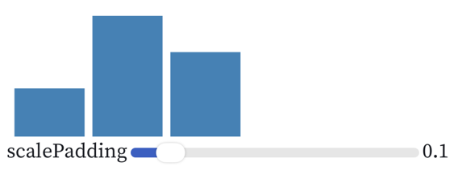

Access Path Selection in Relation Database Management System
本文是介绍数据库查询计划的鼻祖论文，基于 IBM 早起的 System R 试验性关系数据库，在现在看来，应该是关系数据库的“旧石器时代”。
1. Introduction
2. Processing of an SQL statement
4 phases:
- parsing: SQL to Query Block(AST)
- optimization: catalog lookup, validate, plan generation(access plan selection)
- code generation
- execute
3. Research Storage System
- Relation: Set of Tuple
- Page(4K): Set of Tuple( each tuple tagged with relation-id, so can contain different relation’s tuple)
- no tuple spans a page
- Segment: Set of Page
- Index: B-trees
- clustered index
- SCAN: open, next, close
- Segment scan
- Index scan
- scan filter
4. Costs for an access-path
COST = Page_Fetches + W * RSI_Calls
- Page Fetches: IO Cost
- RSI Calls: CPU Cost
5. Access path selection for Joins
- 2-way join
- selection 1: outer(probe side) and inner(build side)
- selection 2: join method
- nested loops
- merging scan: 两个表在 join column 上已排序
- 这篇文章没有提到 hash-join，这是现在主流数据库 join 的主要方式。
- N-way join is a recur 2-way join
- paths: 最多
N!种可能性
- paths: 最多
- optimization
- 只考虑：inner side 与 outer side 有 join 连接的情况。
- 构建一颗 access path tree，对每一条path，评估其 cost
- N:
C-outer的基数：N = (product of the cardinalities of all relations T of the join so far) * (product of the selectivity factors of al 1 applicable predicates) C-nested-loop-join(path1, path2) = C-outer(path1) + N * C-inner(path2)C-merge(path1, path2) = C-outer(path1) + N * C-inner(path2)– 不太理解这个 cost 函数，merge 时，C-inner(path2) 会显著小于 nested loop。
- 思考：对最新的关系数据库而言，优化应考虑：
- filter 尽量下压到 scan 阶段
- 如果不能下压到 scan 阶段，则尽量提前到 join 之前。
- 使用 hash-join 时，尽可能选择技术小的作为 build side，技术大的作为 input-side
- 如果左右两侧已按 join column 排序，则可选择 merge-sort join
6. Nested Query
- 非相关子查询：如果子查询中未使用自由变量，则可以独立执行，而无需针对每一行展开执行。
- 相关子查询
Dynamic Programming Strikes Back (动态规划)
本文介绍了一种改进的 DPccp 算法，更好的支持复杂的 join predicate 和 outer joins，可以带来数量级上的性能提升。
1. 简介
CBO：Cost Based Optimization RBO: Rule Based Optimization Join Order 在 CBO 中非常重要。 经典论文：access path selection:
- 按照数据规模从小到大的顺序（这一条并没有在该文中明确提到）
- left deep tree (虽然简单，但并不一定是最佳的)
- DPsize
超图
- 超图
- H = (V, E)
- V: a set of nodes (表、关系)
- E: a set of hyper edges （join)
- e: (u, v): u, v: non empty subset of V
- simple edge: |u| = |v| = 1
- simple graph: all edges are simple edges.
- 子图 H’ = (V’, E’)
- $V’ \in V$
- $E’ \in E$
- Connected
- $|V| = 1$
- partition V’, V“, edge e = (u,v), $u \in V’, v \in V“$
- CSG: connected subgraph, CMP: Connected Complement
- csg-cmp pair
Join 顺序的问题，就演变为查找 csg + csp 对的问题。
算法
评估
参考：
How Vega Works
原始连接：https://observablehq.com/@vega/how-vega-works#inputSpec
- Vega 使用 JSON 描述，有对用 JSON-Schema 规范。
- Vega 不仅仅适用于静态的可视化，其具有交互能力和渲染动态数据的能力
示例：
{
"width": 200,
"height": 100,
"data": [{
"name": "table",
"values": [{
"key": "A",
"value": 4
}, {
"key": "B",
"value": 10
}, {
"key": "C",
"value": 7
}]
}],
"scales": [{
"name": "xscale",
"type": "band",
"domain": {
"data": "table",
"field": "key"
},
"padding": {
"signal": "scalePadding"
},
"range": "width"
}, {
"name": "yscale",
"type": "linear",
"domain": {
"data": "table",
"field": "value"
},
"range": "height"
}],
"marks": [{
"type": "rect",
"from": {
"data": "table"
},
"encode": {
"update": {
"x": {
"scale": "xscale",
"field": "key"
},
"y": {
"scale": "yscale",
"field": "value"
},
"y2": {
"scale": "yscale",
"value": 0
},
"width": {
"scale": "xscale",
"band": 1
},
"fill": {
"value": "steelblue"
}
}
}
}],
"signals": [{
"name": "scalePadding",
"value": 0.1,
"bind": {
"input": "range",
"min": 0,
"max": 0.99,
"step": 0.01
}
}]
}

Visualization as Reaction Dataflows
对一个源文件，Vega 会生成数据流图 dataflow graph，来处理从数据到可视化元素、坐标轴、图例的映射，以及响应交互式事件。
dataflow graph 包括：
- nodes(operators)：处理数据计算（源数据、派生的数据、可视化图元数据，signal）
- edges: 数据流向
- parameter edges
- pulse edges
- 灰色节点：signals
- 红色节点：datasources
- blue 节点：可视化marks
- 白色节点：内部的operators
- 黑色边： 数据流依赖
- 灰色边：parameter 依赖 node 颜色：与目前产品中的不一致了。
- datajoin: map input data objects to scenegraph mark items
- collect: 收集 datajoin 的输出
- mark：bind mark to the scenegraph
- encode: 编码每个 mark 的属性
- bound： 计算每个 mark 的边界，用于布局，和处理点击事件
- render: 提交 scenegraph 修改到渲染队列中
- sieve: 传播 mark 的修改
Parse a Vega Spec
parsedSpec = vega.parse(inputSpec)
- 解析 JSON，生成 dataflow graph, 这个 graph 目前并不是一个 JSON
- encode.update 编译为 JavaScript 代码
节省后续的解释时间o.x = _["%xscale"](datum["key"]); o.y = _["%yscale"](datum["value"]); o.y2 = _["%yscale"](0); o.width = this.__bandwidth(_["%xscale"]); o.fill = "steelblue";
View & Dataflow Runtime
Scenegraph & Rendering
Vega Dataflow 计算并维护一个 scenegraph，这是一棵可视化元素的树，可以通过 SVG 或 Canvas 进行渲染。 在图元中， mark 是一组 item（每个item 对应单次 encode ），这个与我之前理解的概念不同。 对 scenegraph 进行更新后，也可以进行高效的更新，而非重新渲染整个图。 使用 Canvas 时，如何进行增量式的渲染，应该还是很有技术挑战的。
坐标轴、图例的处理
Vega 对 Axies 会生成 axis-grid, axis-tick, axis-label, axis-domain 等图元。 对图例也是如此，其实还是相当于一个 Dataflow 的语法糖
Vega 从 JSON 到 Canvas 的完整流程分析
本文档详细描述了 Vega 可视化库从读取 JSON 描述文件到最终渲染到 Canvas 的完整流程，包括每个步骤的行为和关键代码位置。
流程概览
Vega 的渲染流程是一个响应式的数据驱动过程，主要包含以下 7 个阶段：
- 初始化阶段 - View 构造和基础设施创建
- JSON 解析阶段 - 将声明式规范转换为可执行结构
- 数据流图构建阶段 - 创建操作符管道和依赖关系
- 渲染器初始化阶段 - 设置 Canvas 渲染环境
- 数据流执行阶段 - 响应式数据处理和传播
- 场景图更新阶段 - 更新可视元素属性
- Canvas 渲染阶段 - 最终绘制到画布
详细流程分析
1. 初始化阶段 (View Construction)
代码位置： packages/vega-view/src/View.js:42
export default function View(spec, options) {
// 创建 Dataflow 实例
Dataflow.call(view);
// 初始化 scenegraph 和渲染器
view._scenegraph = new Scenegraph();
view._renderer = null;
view._renderType = options.renderer || RenderType.Canvas;
// 解析规范并构建运行时
const ctx = runtime(view, spec, options.expr);
}
主要行为：
- 创建 View 实例，继承自 Dataflow 提供响应式数据流能力
- 初始化场景图 (Scenegraph) 作为可视元素的层次结构
- 设置渲染类型（默认 Canvas，也支持 SVG）
- 创建事件处理器和信号绑定系统
2. JSON 解析阶段 (Specification Parsing)
代码位置： packages/vega-parser/src/parse.js:6
export default function(spec, config, options) {
if (!isObject(spec)) {
error('Input Vega specification must be an object.');
}
config = mergeConfig(defaults(), config, spec.config);
return parseView(spec, new Scope(config, options)).toRuntime();
}
代码位置： packages/vega-runtime/src/context.js:5
export default function(view, spec, expr) {
return context(view, transforms, functionContext, expr).parse(spec);
}
主要行为：
- 验证 JSON 规范的格式和结构
- 合并默认配置、用户配置和规范中的配置
- 创建解析上下文 (Context)，管理解析状态
- 将声明式的 JSON 规范递归解析为可执行的数据流图结构
- 解析数据源、变换、标记、比例尺、轴、图例等组件
3. 数据流图构建阶段 (Dataflow Graph Construction)
代码位置： packages/vega-parser/src/parsers/mark.js:18
对于每个 mark（图形标记），解析器会创建一系列操作符形成数据处理管道：
// 数据连接操作符 - 将数据映射到可视项目
op = scope.add(DataJoin({
key: input.key || (spec.key ? fieldRef(spec.key) : undefined),
pulse: input.pulse,
clean: !group
}));
// 收集操作符 - 收集可视项目
op = store = scope.add(Collect({pulse: joinRef}));
// 标记操作符 - 创建可视标记
op = scope.add(Mark({
markdef: definition(spec),
interactive: interactive(spec.interactive, scope),
context: {$context: true},
pulse: ref(op)
}));
// 编码操作符 - 应用视觉编码
op = enc = scope.add(Encode(parseEncode(
spec.encode, spec.type, role, spec.style, scope,
{mod: false, pulse: markRef}
)));
// 边界计算操作符 - 计算图形边界
const bound = scope.add(Bound({mark: markRef, pulse: layoutRef || encodeRef}));
// 渲染操作符 - 标记需要渲染的项目
const render = scope.add(Render({pulse: boundRef}));
主要行为：
- 为每个 mark 创建完整的数据处理管道
- 建立操作符之间的依赖关系和数据流连接
- 设置数据变换、视觉编码、布局计算的执行顺序
- 构建响应式的计算图，支持增量更新
4. 渲染器初始化阶段 (Renderer Initialization)
代码位置： packages/vega-view/src/initialize.js:8
export default function(el, elBind) {
const view = this,
type = view._renderType,
module = renderModule(type);
const Renderer = (el ? module.renderer : module.headless);
view._renderer = initializeRenderer(view, view._renderer, el, Renderer);
}
代码位置： packages/vega-scenegraph/src/CanvasRenderer.js:20
initialize(el, width, height, origin, scaleFactor, options) {
this._options = options || {};
this._canvas = this._options.externalContext
? null
: canvas(1, 1, this._options.type);
if (el && this._canvas) {
domClear(el, 0).appendChild(this._canvas);
this._canvas.setAttribute('class', 'marks');
}
return super.initialize(el, width, height, origin, scaleFactor);
}
主要行为：
- 根据配置选择合适的渲染器类型（Canvas/SVG/Headless）
- 创建 Canvas 元素并添加到指定的 DOM 容器
- 设置 Canvas 的尺寸、缩放比例和变换参数
- 初始化渲染上下文和脏区域跟踪
5. 数据流执行阶段 (Dataflow Execution)
代码位置： packages/vega-dataflow/src/dataflow/run.js:27
export async function evaluate(encode, prerun, postrun) {
const df = this, async = [];
// 等待数据加载完成
if (df._pending) await df._pending;
// 增加时间戳
const stamp = ++df._clock;
df._pulse = new Pulse(df, stamp, encode);
// 初始化优先队列，处理所有被触碰的操作符
df._touched.forEach(op => df._enqueue(op, true));
df._touched = UniqueList(id);
let count = 0, op, next;
try {
while (df._heap.size() > 0) {
// 取出优先级最高的操作符
op = df._heap.pop();
// 如果rank改变了，重新入队
if (op.rank !== op.qrank) {
df._enqueue(op, true);
continue;
}
// 执行操作符
next = op.run(df._getPulse(op, encode));
// 处理异步操作
if (next.then) {
next = await next;
} else if (next.async) {
async.push(next.async);
next = StopPropagation;
}
// 传播到依赖的操作符
if (next !== StopPropagation) {
if (op._targets) op._targets.forEach(op => df._enqueue(op));
}
++count;
}
} catch (err) {
df._heap.clear();
error = err;
}
}
主要行为：
- 创建新的 Pulse 对象，包含时间戳和变更集信息
- 按照依赖关系和优先级顺序执行所有被标记的操作符
- 处理数据加载、转换、聚合、过滤等数据操作
- 执行视觉编码、布局计算、边界计算等可视化操作
- 支持异步操作和错误处理
6. 场景图更新阶段 (Scenegraph Update)
代码位置： packages/vega-view-transforms/src/Render.js:13
inherits(Render, Transform, {
transform(_, pulse) {
const view = pulse.dataflow;
// 遍历所有变更，将项目标记为脏数据
pulse.visit(pulse.ALL, item => view.dirty(item));
// 设置 z-index 脏标记
if (pulse.fields && pulse.fields['zindex']) {
const item = pulse.source && pulse.source[0];
if (item) item.mark.zdirty = true;
}
}
});
主要行为：
- 遍历所有添加、删除、修改的数据项
- 将对应的可视元素标记为“脏“（需要重绘）
- 处理 z-index 变更，标记需要重新排序的元素
- 更新场景图中可视项目的属性和状态
7. Canvas 渲染阶段 (Canvas Rendering)
代码位置： packages/vega-view/src/View.js:152
async evaluate(encode, prerun, postrun) {
// 执行数据流
await Dataflow.prototype.evaluate.call(this, encode, prerun);
// 根据需要进行渲染
if (this._redraw || this._resize) {
try {
if (this._renderer) {
if (this._resize) {
this._resize = 0;
resizeRenderer(this);
}
await this._renderer.renderAsync(this._scenegraph.root);
}
this._redraw = false;
} catch (e) {
this.error(e);
}
}
}
代码位置： packages/vega-scenegraph/src/CanvasRenderer.js:76
_render(scene, markTypes) {
const g = this.context(),
o = this._origin,
w = this._width,
h = this._height,
db = this._dirty,
vb = viewBounds(o, w, h);
// 设置画布状态
g.save();
// 计算需要更新的区域
const b = this._redraw || db.empty()
? (this._redraw = false, vb.expand(1))
: clipToBounds(g, vb.intersect(db), o);
// 清除画布
this.clear(-o[0], -o[1], w, h);
// 绘制场景
this.draw(g, scene, b, markTypes);
// 恢复画布状态
g.restore();
db.clear();
}
draw(ctx, scene, bounds, markTypes) {
if (scene.marktype !== 'group' && markTypes != null &&
!markTypes.includes(scene.marktype)) {
return;
}
const mark = marks[scene.marktype];
if (scene.clip) clip(ctx, scene);
mark.draw.call(this, ctx, scene, bounds, markTypes);
if (scene.clip) ctx.restore();
}
主要行为：
- 获取 Canvas 2D 渲染上下文
- 计算需要重绘的区域（增量渲染优化）
- 设置裁剪区域，只重绘变更的部分
- 清除需要更新的 Canvas 区域
- 递归绘制所有场景图元素（group、mark、text等）
- 应用变换、裁剪和样式
关键设计特点
响应式架构
- 基于 Pulse 的变更传播机制
- 增量更新，只处理变更的数据
- 支持信号驱动的交互式更新
模块化设计
- 每个功能模块独立打包（vega-dataflow、vega-parser等）
- 清晰的职责分离和接口定义
- 易于扩展和维护
性能优化
- 脏区域追踪，只重绘变更部分
- 优先级队列确保正确的执行顺序
- 异步处理支持，避免阻塞UI
灵活性
- 支持多种渲染后端（Canvas、SVG）
- 可配置的变换和编码管道
- 支持自定义函数和表达式
总结
Vega 的整体架构是一个精心设计的响应式可视化系统。从 JSON 规范到最终的 Canvas 渲染，整个流程体现了声明式编程、函数式数据流和增量计算的设计理念。这种架构使得 Vega 能够高效地处理复杂的交互式可视化需求，同时保持良好的性能和可扩展性。
流程的核心是将声明式的可视化规范转换为一个响应式的计算图，通过 Pulse 机制传播数据变更，最终通过高效的渲染器将结果绘制到画布上。这种设计使得任何数据或配置的变更都能自动触发相应的重新计算和重绘，实现了真正的响应式可视化。
系列
- task weaver 要理解 task weaver，看懂这个日志文件，就可以很好的理解了
- How we built our multi-agent research system
- JoyAgent-JDGenie
- AnyTool